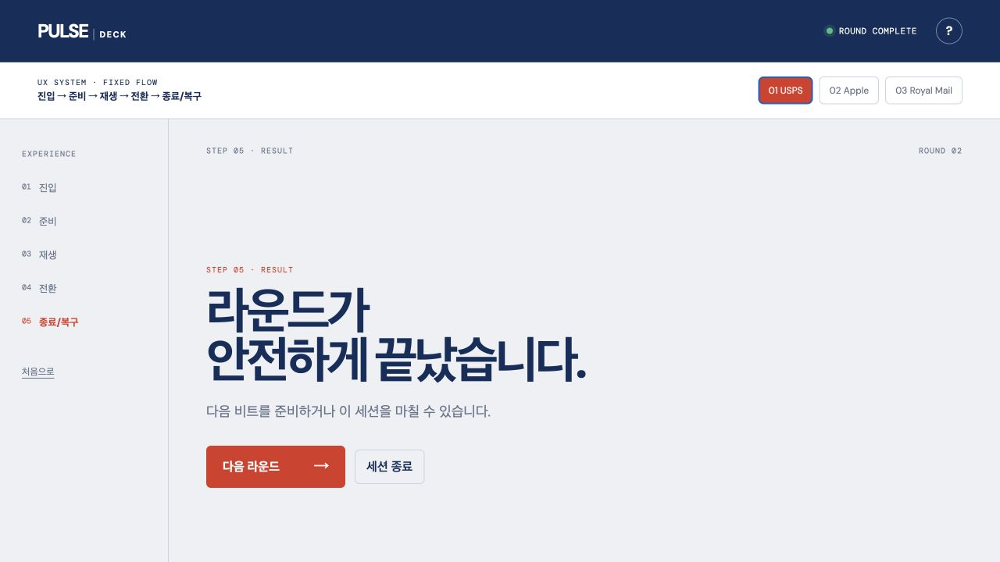
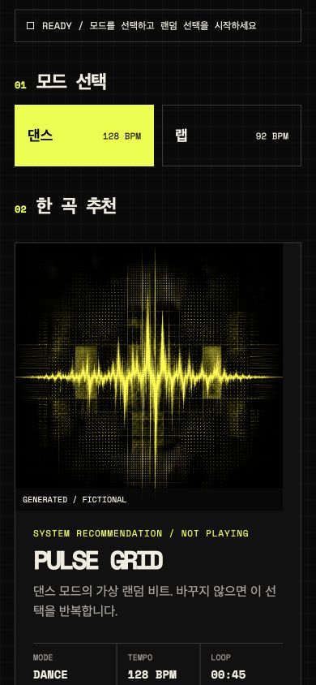
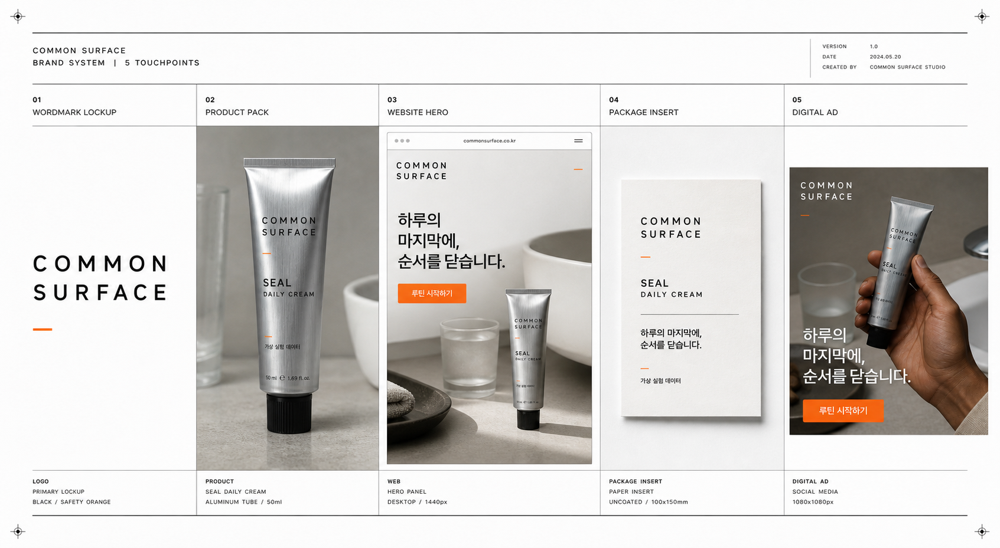

STARTING QUESTION
일관성과 지속성을 바탕으로 유지, 보수, 개선이 가능한범용 디자인 시스템을 만드는 것이 가능할까?
이 질문을 확인하기 위해 시스템을 만들고, 실제 화면과 제품에 적용했다.
UX의 흐름과 시각 표현을 분리하면, AI를 사용해 더 많은 맥락으로 확장할 수 있을까?
이 질문을 확인하기 위해 시스템을 만들고, 실제 화면과 제품에 적용했다.
흐름과 시각 표현을 분리한 뒤 제품·사용자·상황에 맞춰 조합한다.
처음부터 앱을 만드는 것이 목적은 아니었다. AI가 UX와 UI를 이해하고 재사용할 수 있는 기준을 만드는 것이 목표였다.


내가 만들고 사용하던 디자인 시스템을 다시 읽었다. 반복되는 규칙과 무너지는 지점을 확인하며, UX와 시각 표현을 분리할 근거를 찾았다.


Figma MCP용 플러그인을 만들고 A/B 테스트했다. 속도를 높이려던 도구가 설정·토큰 관리·시각 해석이라는 새로운 부담을 만들었다.


목표·사용자·상황을 프롬프트에 명시
UX Preset과 Design Pack을 나눔
판단 기준을 Markdown으로 기록
AI 평가와 시안을 비교하며 수정
Figma Make로 데모 시스템과 UX 통합 프리셋을 만들었다. “만들 수 있는가”보다 “의도한 흐름이 남아 있는가”를 확인하게 됐다.


흩어진 화면과 리서치를 Design Pack과 UX Preset 문서로 정리했다. Figma는 결과를 확인하는 곳, Markdown은 판단을 다시 쓰는 곳이 됐다.


7개 매체에 변경을 전파했다. 확장성은 보였지만 Binding·권한·rollback·증거 관리가 복잡해졌다.
Design Pack과 UX를 고정하고 맥락 하나만 바꿨다. 변화는 읽혔지만 실제 사용자 가치까지 증명한 것은 아니다.

확인한 것
UX와 시각 표현은 나눌 수 있다.
Design Pack과 UX Preset은 다른 역할을 한다.
문서화된 판단은 다음 실험의 출발점이 된다.
아직 남은 질문
다른 사람도 같은 방식으로 재사용할 수 있는가?
실제 사용자가 차이를 느끼는가?